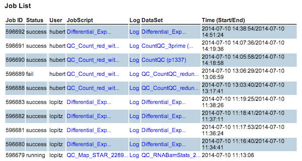

Contents
- Login
- Main Menu
- Import DataSet
- Run Sushi Application
- Check Job Status
- Check Result
1. Login

- Please use your B-Fabric account (ID and Password)
- If you do not have an account, please register in B-Fabric system first
2. Main Menu
- You can see main menu below after you succeed in logging-in Sushi

- DataSet: You can see, edit and delete DataSet.
- Import DataSet: You can import a DataSet from .tsv file.
- Check Jobs: You can check your submitted jobs and the status.
- gStore: You can browse reslut files.
top right
- Sign out: Logout from Sushi
- Today's Menu: Go back to the top menu
- SushiApp List: All available Sushi Applications will be shown
- Help: Sushi Documentation
- Project: You can select your project from the drop-down list, and 'GO' button switches to the project page
3. Import DataSet

- You can import a DataSet file (.tsv) in Sushi database.
- DataSet Name can be set.
- If you want to make a relation to an existing DataSet, you can put the DataSet ID in 'Parent DataSet ID' box.
4. Run Sushi Application
- Clicking and DataSet from top menu and selecting one DataSet, then you can see samples in the DataSet and application buttons available will be shown.
- If there is no application available for the DataSet, no button will be shown.

- After clicking an application button, parameter setting view will come.
- It is an esample of FastQC application view below.

Parameters
- Name: This will be a part of result folder name
- Comment: You can add some comment
- Cores: Number of cores for parallel calculation
- RAM: Expected memory amount to be used
- Scratch: Expected working disk space to be used
- Node: Cluster node on which the job will run
- Process Mode: Sample mode or DataSet mode (Usually it is fixed)
- cmdOption: specific command like option (depending on application)
Note
- The other parameter(s) are defined depending on the Sushi application
5. Check Job Status

- 'Check Jobs' menu shows submitted job statuses
- The job status becomes running, fail, or success
6. Check Result
- If a job sceeds and finish, a new DataSet is generated.
- If the output DataSet has a column with Link tag (e.g. FastQC see below), you can see the more detail by clicking the link.

|

{kind=link}